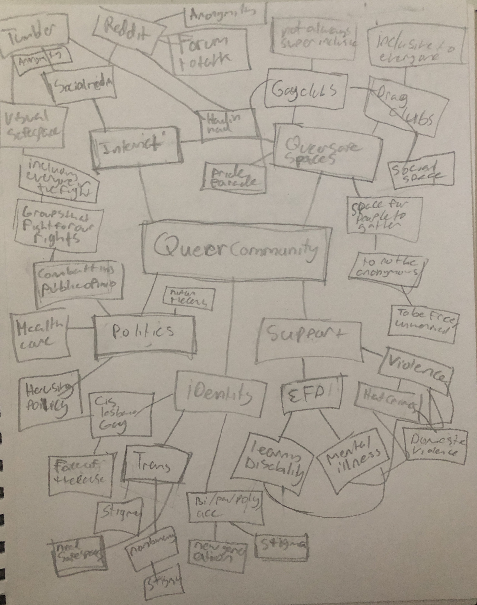

At the center of my brainstorm is the queer community and the first branches I started width were the main sectors of how the community gathers and unites. From those branches grew more the specific methods, reasons, and issues with gathering. Making this mind map causesd me to be focused on two topics. The first concerns queer people and gathering on the internet and specific social media platforms. The second area it made me interested in is the representation and growth of "newer" indentities such as bisexual, pansexual, polysexual, nonbinary, asexual, and agender just to name a few.